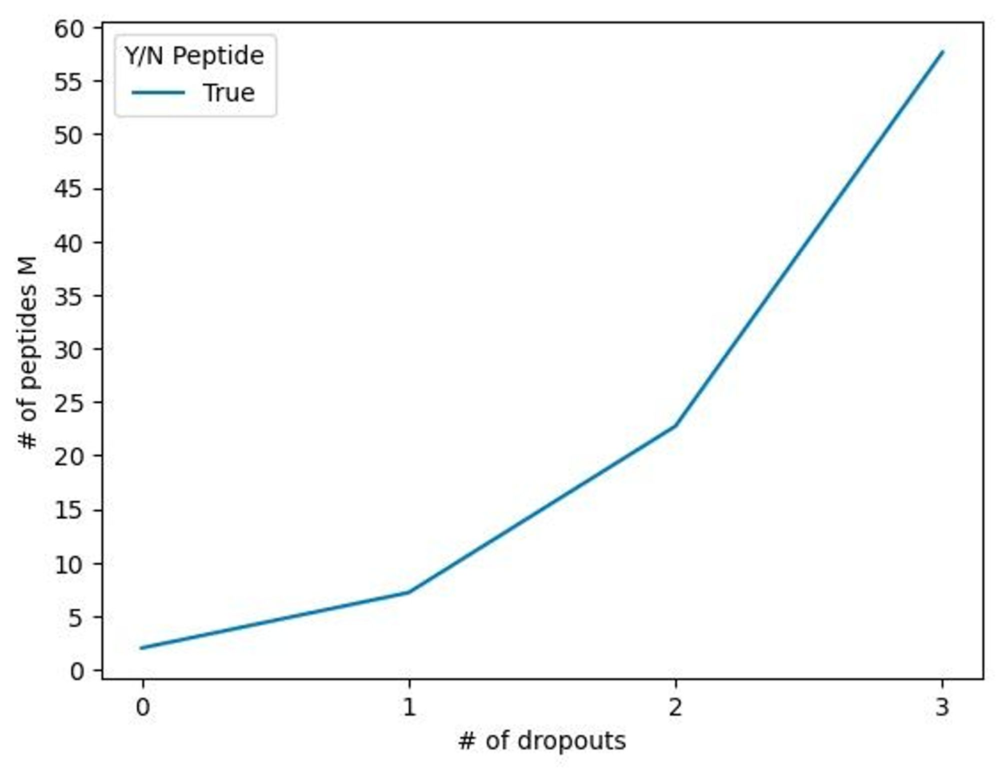

Peptide pooling
Outline
Properties of our algorithm
E - protein with E_1 … E_M peptides, for which we want to find a mixing scheme into p pools p_i with n the total number of pools.
Objective. Find the optimal distribution of peptides into the pools, such that the number of pools n is minimized, the total occurrence of each peptide across pools equals x, where x is minimized, and the total number of peptides per pool is approximately constant and not higher than R.
We consider the distribution of peptides E_j into pools p_i as assigning addresses a_j to each peptide E_j.
The construction of the pools is limited by the following constraints:
-
The number of peptides per pool should be approximately the same for each pool, with the upper limit of peptides per pool R
-
Each address a_j consists of a combination of unique pools
-
Each address a_j differs only in one pool from the its successor a_{j+1}:
-
For all other addresses, the Hamming distance is greater than 1
-
The Hamming distance between the union of two adjacent addresses and any other union of adjacent addresses is equal or greater than 1

Gray codes
- works, but are not ideally balanced
- They are the cycled, so there is way to balance them by moving the frame, but still this way they are not balanced enough:
- For n_pool = 11, iters = 4, the least difference = 15 (253 peptides)
- For n_pool = 17, iters = 4, the least difference = 161 (1872 peptides)
- I found an article on construction of balanced Gray codes, where balance is in terms of number of transitions for each digit
- Now I need to implement its way of construction into the code…
Hamiltonian path
- Misha came up with an algorithm of search for the Hamiltonian path in the graph of addresses
- Actually, cyclic Gray code is a Hamiltonian cycle in the R-ary n-cube, the graph whose vertices are all n-strings with digits from the set {0, 1,…, R1} in which two vertices are adjacent if they differ in only one digit by 1.
- Now I need to program this algorithm
- one of the nodes is selected
- all possible neighbot nodes are determines, the node which impacts the balance of distribution of 1s among all positions is chosen
- chosen node is checked 1) whether is was already added to the arrangement before; 2) whether its union with the previous nodes is already added to the list of unions
- using dynamic programming

Because of the balance of peptides in pools drop-outs are less influential.